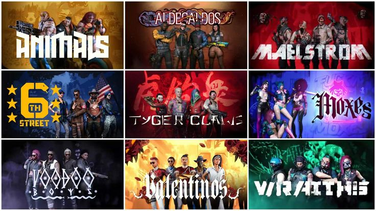

Gangs in Game
There are many gangs in the game of Cyberpunk, they're spread across the whole map occupying specific areas that compliment the way the npcs dress and speak. They're surrounding area immerses you into the game more than when you're driving around not taking in the view.

They all have different styles, clothing is the thing that distinguish them the most.
A gang like Malestrom have very intrusive cybernetic implants, this can be seen in the video on the cyberpsyhco page.
The weapons vary a lot as well, a gang like the tyger claws would use swords and smart weapons, as the aldecaldos prefer power weapons and vehicles.
Most gangs are filled with people who feel betrayed by the Mega-Corps and government after they were deployed to fight for these people without any help afterwards when America was still collapsed.